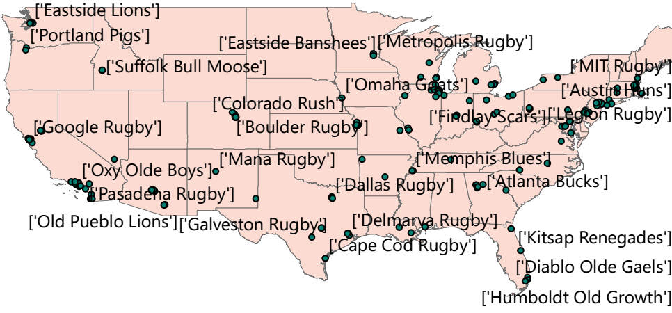

Python Geocoder
Steps of the program
- Parsing raw HTML and saving the necessary data
- Manipulating this data for export to a CSV file to submit to the Census API
- Submitting data to the Census API, formatting and saving the response
- Manipulating the response to extract longitude and latitude data
- Combining necessary data for ArcMap
- Importing this data through ArcMap and displaying a on a map.
Please keep in mind that this was a programming exercise, not a cartographical one. Had that been the case, the output map would have been styled much more professionally. As it is, it was more proof-of-concept than anything else
Code
from lxml import html #for scraping HTML data
import requests # for handling API requests
import csv # for input/output of CSV files
import arcpy #needed for ArcMap
import os
#delcaring all lists as empty
teamName = []
teamAddress = []
teamStreet = []
teamCity = []
teamState = [] #optional for API. Will be submitted in CSV as blank/comma filled
teamZIP = [] #optional for API. Will be submitted in CSV as blank/comma filled
teamID = []
combined = []
#Web site for HTML to be scraped
page = requests.get('https://blipstar.com/blipstarplus/viewer/maptextonly?uid=5743624&type=nearest&max=600&width=auto&language=&lat=&lng=&accuracy=&sc=us¬str=true&ha=&search=55358&country=&value=600&tagshow=showall&tag=All+Club+Men')
tree = html.fromstring(page.content)
#for loop to scrape web data. Looks for each div with a class name = "result"
#the parses the data with in that div
for result in tree.xpath('//div[@class="result"]'):
teamName.append(result.xpath('div[@class="storename"]/text()')) #finds team names and places them in the list declared above
teamAddress.append(result.xpath('div[@class="storeaddress"]/text()'))#finds team address and places them in the list declared above. Use append over extend to keep formatting for CSV teamZIP.append(result.xpath('div[@class="storepostalcode"]/text()'))
#creates list of numbers to match length of teamName
#needed for first column of Census API CSV template
#adds one to each number in teamID. Python counts from zero, template starts at one
for j, _name in enumerate(teamName):
teamID.append(j+1)
#For splitting teamCity from teamAddress
for t in teamAddress:
if (len(t) == 1) or (len(t)==2):
teamStreet.append("")
teamCity.append(t[0])
elif (len(t)== 3):
teamStreet.append(t[0])
teamCity.append(t[1])
#strips whitespace and commas from teamCity
teamCity = [q.strip() for q in teamCity]
teamCity = [w.replace(",","") for w in teamCity]
#add correct number of commas for state and ZIP. Lists cannot be empty for template
for j, _name in enumerate(teamName):
teamState.append(",")
teamZIP.append(",")
#combines data and adds to CSV file. teamName to be added later as it does not conform to template (match teamID as key)
combined = zip(teamID,teamStreet,teamCity,teamState,teamZIP)
with open('textRugbyZIP.csv', 'wb') as textRugby:
textRugbyWriter = csv.writer(textRugby)
for row in combined:
textRugbyWriter.writerow(row)
#writes club names with ID for later join inside ArcMap
teamIDheader = [("id","Team Name")]
teamIDKey = zip(teamID,teamName)
teamIDKey = teamIDheader + teamIDKey
with open('teamIDKey.csv', "w+") as idCSV:
idWriter = csv.writer(idCSV)
for row in teamIDKey:
idWriter.writerow(row)
#takes created CSV and uploads to Census API. Using pre-created data at this point.
url = "https://geocoding.geo.census.gov/geocoder/locations/addressbatch"
data = {'benchmark':9}
files = {'addressFile': open('textRugbyZIP.csv')}
response = requests.post(url, data=data, files=files, verify=False)
apiData = response.text
apiData.encode('utf-8')
#reads response from API into new CSV,
with open('export.csv',"w+") as csvWriting:
csvWriting.write(apiData)
withClubsRemoved = [] #after removing entries with no geocode result
extractTeamID = []
extractTeamAddress = []
extractTeamLongLat = []
# removes entries with no match
with open('export.csv', "r+") as removeNoData:
clubDataTuple = [tuple(line) for line in csv.reader(removeNoData)]
withClubsRemoved = [t for t in clubDataTuple if t[2]=="Match"]
extractTeamID = [t[0] for t in withClubsRemoved]
extractTeamAddress = [t[4] for t in withClubsRemoved]
extractTeamLongLat = [t[5] for t in withClubsRemoved]
#retrives Lat/Long data, separates by comma and adds each seperately
clubLongLat=[]
for j in extractTeamLongLat:
clubLongLat.append(tuple(j.split(',')))
clubLong = []
clubLat = []
#splits lat and long
for j in clubLongLat:
clubLong.append(j[0])
clubLat.append(j[1])
#clubsLatLong match to teamIDKey via
forCSV = zip(extractTeamID, extractTeamAddress, clubLong, clubLat)
csvHeader = [("id","Address","Long","Lat")]
readyforCSV = csvHeader+forCSV
#writes to CSV for importing into ArcMap
with open("clubXYData.csv", "wb") as XYData:
XYDataWriter = csv.writer(XYData)
for row in readyforCSV:
XYDataWriter.writerow(row)
#Files to import into ArcMap
XYFile = r"C:\Users\ame\Documents\PythonExperiments\clubXYdata.csv"
ClubsIDFile = r"C:\Users\ame\Documents\PythonExperiments\teamIDKey.csv"
#GDB in which to save created tables
out_gdb = r"C:\Users\ame\Documents\PythonExperiments\Rugby.gdb"
#import CSV and convert to tables
arcpy.TableToTable_conversion(XYFile, out_gdb, 'clubXYTable')
arcpy.TableToTable_conversion(ClubsIDFile, out_gdb, 'clubIDTable')
#Join tables together
arcpy.AddJoin_management("clubXYTable","id","clubIDTable","id")
#add XY data to map
arcpy.MakeXYEventLayer_management ('clubXYTable', 'clubXYTable.Long','clubXYTable.Lat', 'clubsPlotted')
# get the map document
mxd = arcpy.mapping.MapDocument("CURRENT")
# get the data frame
df = arcpy.mapping.ListDataFrames(mxd,"*")[0]
# create a new layer
newlayer = arcpy.mapping.Layer(r'C:\Users\ame\Documents\Shared_Shapefiles\US_States\Contiguous48.shp')
# add the layer to the map at the bottom of the TOC in data frame 0
arcpy.mapping.AddLayer(df, newlayer,"BOTTOM")
#adding team name labels
toLable = arcpy.mapping.ListLayers(mxd, "")[0]
toLable.showLabels = True
arcpy.RefreshActiveView()
#Exporting to PDF
arcpy.mapping.ExportToPDF(mdx,r'C:\Users\ame\Documents\PythonExpriments\Rugbyclubs.pdf')
Map Output
